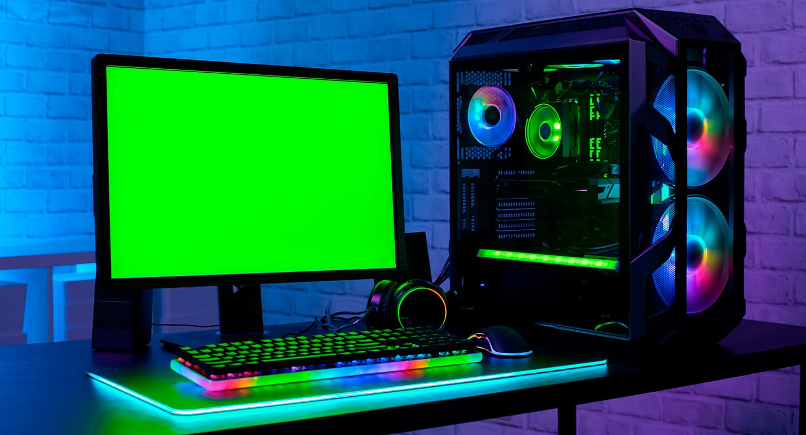

Una computadora básica y pesada. La misma era furor entre los 90' hasta mediados del año 2000. Solía ser el primer contacto de las personas en "Cibers", lugares en los cuales se "alquilaban" por hora las computadoras. Normalmente era un dispositivo muy flexible para los muy escazos juegos que ofrecía el mercado en su momento.

Computadora básica, cuando la tecnología se instaló oficialmente en el mercado y no era únicamente un objeto que marcaba un status económico sino que era común encontrar este tipo de computadoras en oficinas o casas. Recomendable para jugar juegos de bajos requisitos puesto que aún presentaba limitaciones pero el mercado de la computadora iba incrementando la tecnología en los componentes.

Computadora "Gamer". No puede aplicarse un ejemplo en concreto a causa de que los componentes de las computadoras se modernizan todos los años con diversas marcas, de la misma manera, los videojuegos en la actualidad van aumentando sus requisitos, géneros, jugabilidades y plataformas en las que son compatibles.